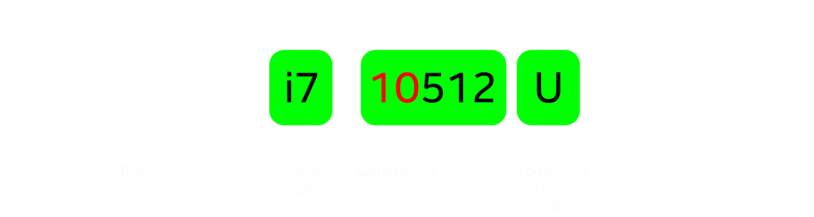
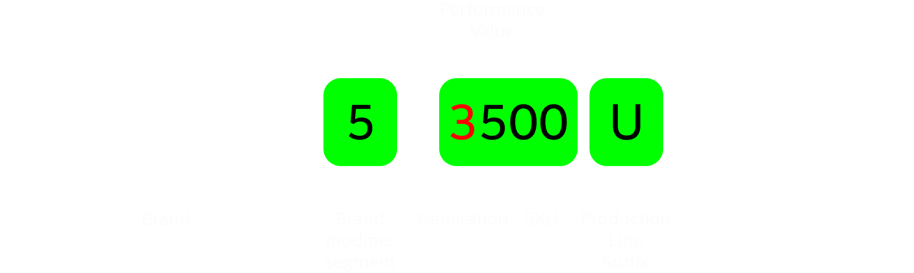
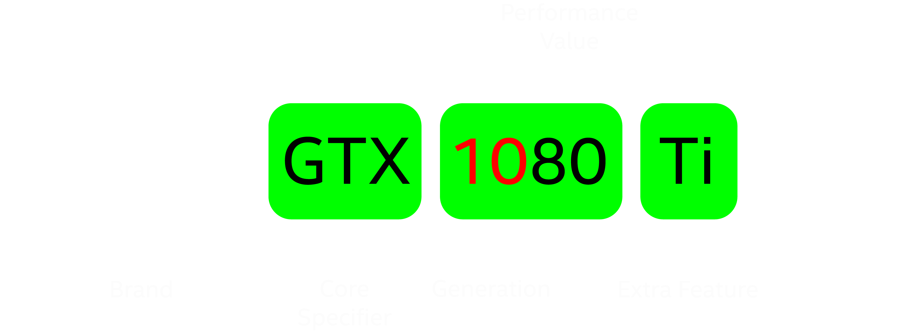

CPU & GPU : What Do the numbers Mean ?
High end is always preferable, right? But most the people are inappropriate during purchase of a laptop, due to lack of information about computer internals. Mostly the numbers beside "CPU and GPU"
Nvidia GTX 1080 Ti | AMD Radeon R9 270
So, what do the numbers indicate?
After reading some google and documentation i found meaning of those numbers :). Those are preserved numbering system to differentiate features and capabilities among various CPU's / GPU's and it's families.
CPU's :
Intel CPU :
Intel is the World's largest and higest valued semiconductor chip (micro processor's) manufacturer. Now-a-days these processor's found in the Personal Computers (PC), laptops. it is the initial developer of x86 based Processor's. Intel is the batch production company, it also supplies it's products to varoius communication and computing companies.
Intel split there's processor's generations into 3 types Core, Pentium, Celeron. Intel Core is the leading CPU's in the current market.
Note : Each Suffix Has its Unique features and capabilities excluding the generation and family
| Suffix | Description |
|---|---|
| G1-G7 | Intigrated Graphics with performance level 1-7 |
| E | Embedded CPU |
| F | Requires Discrete Graphics card |
| G | Includes with Discrete Card |
| H | High Performance Optimized for Mobile (high power usage) |
| K | Unlocked CPU (Only for Desktops) |
| HK | High Performance Optimized for Mobile with Unlocked CPU |
| HQ | High Performance Optimized for Mobile with Quad Core CPU |
| S | Special Edition |
| T | Low Power Consumption (Low Power + Low CPU Speed) |
| U | Mobile Power Efficient (Low Power + High CPU Speed) |
| Y | Mobile Extremly Low Power |
Discrete Graphics has its own VRAM for processing the Graphics it doesn't depend on the onboard RAM for its processing. Generally, if u see a 5.81 GB RAM availiable ram out of 8 GB RAM, it's directly indicates absence of discrete GPU because the GPU is fixed on borad called as intigrated GPU.
Brand modifier indicates the basic features and capabilities of CPU family it varies as i3, i5, i7, i9. the Higher modifier gives you the best basic features.
Generation tracks the CPU Specs such as Size of CPU or any bug fixes and amount of power consumption.
SKU (Stock Keeping Unit) is the factor which tracks extra features and capabitlites included with chipset (Higher SKU number has more features in the same family)
Note : CPU which has high power usage release more heat.
AMD (Advanced Micro Devices) CPU :
AMD develops micro processors and graphics processing units for computers and laptops. it is the against the intel CPU in the market stratagies. it doesn't have much generation's on CPU.
Note : Each Suffix Has its Unique features and capabilities excluding the generation and family
| Suffix | Description |
|---|---|
| G | Intigrated Graphics Radeon |
| X | High Performance (Only for Desktops, high clock and high CPU speeds) |
| U | Ultra Low Power (Low CPU Speed) |
| H | High Performance (higher Power Usage) |
| T | High Performance (Higher Clock Speed) |
| XT | High Performance (Higher Clock Speed > T) |
| No Suffix | Desktop CPU's |
GPU's :
Nvidia GPU :
Nvidia Corporation designs graphics processing units (GPUs) for the gaming and professional markets, is in direct compitition with AMD radeon GPU's. Nvidia GPU's are also deployed supercomputing sites around the world. it also produce tegra Processors for mobiles.

| Suffix | Description |
|---|---|
| Geforce | Discrete Graphics Card (add-on board) |
| GT | Low-End Graphics Card |
| GTX | High-End Graphics also called as Gaming oriented Machine |
| GTX Ti | Powerfull than Non Ti cards |
| GTX Ti Boost | Powerfull than Non Boost Cards |
| RTX | More PowerFull Than Other Cards (High render Speeds) |
GT cards are the old generation cards, not preferred for high end gaming. GTX is the Newest generation of Nvidia cards also suitable for high end games and computer with GTX cards called as gaming-oriented machine. RTX is more Powerfull than GTX
Note : Before buying high end graphics cards such as Nvidia RTX 2080 be sure it has proper cooling system
AMD (Advanced Micro Devices) GPU :
Radeon Graphics is the successor to the Rage line, it provides Graphics processing units to its main unit. radeon is a sub unit aquired by AMD in 2006.

| Suffix | Description |
|---|---|
| HD XXXX | Old Generation GPU Card |
| RX XXX(X) | New Generation GPU Card |
Numbering system for AMD graphics varies from Nvidia GPU, below is the detailed explaination of AMD GPU's
Example :
HD 6870 - number '6' indicates the generation of the GPU and number '870' indicates the performance of the GPU. AMD GPU's with number R9 290 or Above indicates GPU has large memory and high horse power.
AMD with R family are classified into varoius types as R3, R5, R7, R9.